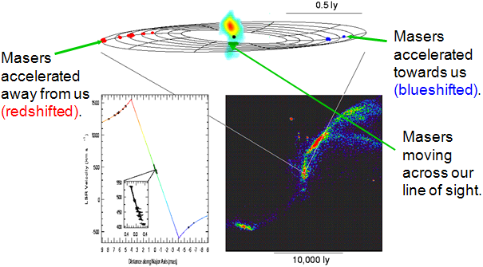

VLBI is an acronym for Very Long Baseline Interferometry and associated with radio astronomy and geodesy. Typically VLBI refers to experiments that do not process their data in real time, but record it for later correlation. In the world of increasing network connectivity, we are entering the realm of eVLBI (electronic VLBI), in which data are cross correlated in virtually real time. VLBI experiments have baselines of usually 100s or 1000s of km.
VLBI falls into several categories:
- Continental – baselines of 100s to 1000s of km,
- Global – Baselines of 1000s of km,
- Space VLBI – involving the use of satellites, like VSOP.
VLBI is used in measuring pulsar parallaxes and proper motions, resolving the cores of radio galaxies and jets from supermassive black holes, among others.
One of VLBI’s greatest achievements was mapping the motion of water maser hotspots around a supermassive black hole in the core of NGC 4258 which allowed astronomers to show unambiguously that supermassive black holes were present in the cores of galaxies. The hotspots revealed the presence of a Keplerian disk. The resolution of the disk combined with the redshift of the host galaxy enabled one of the most accurate determinations of the Hubble constant.
